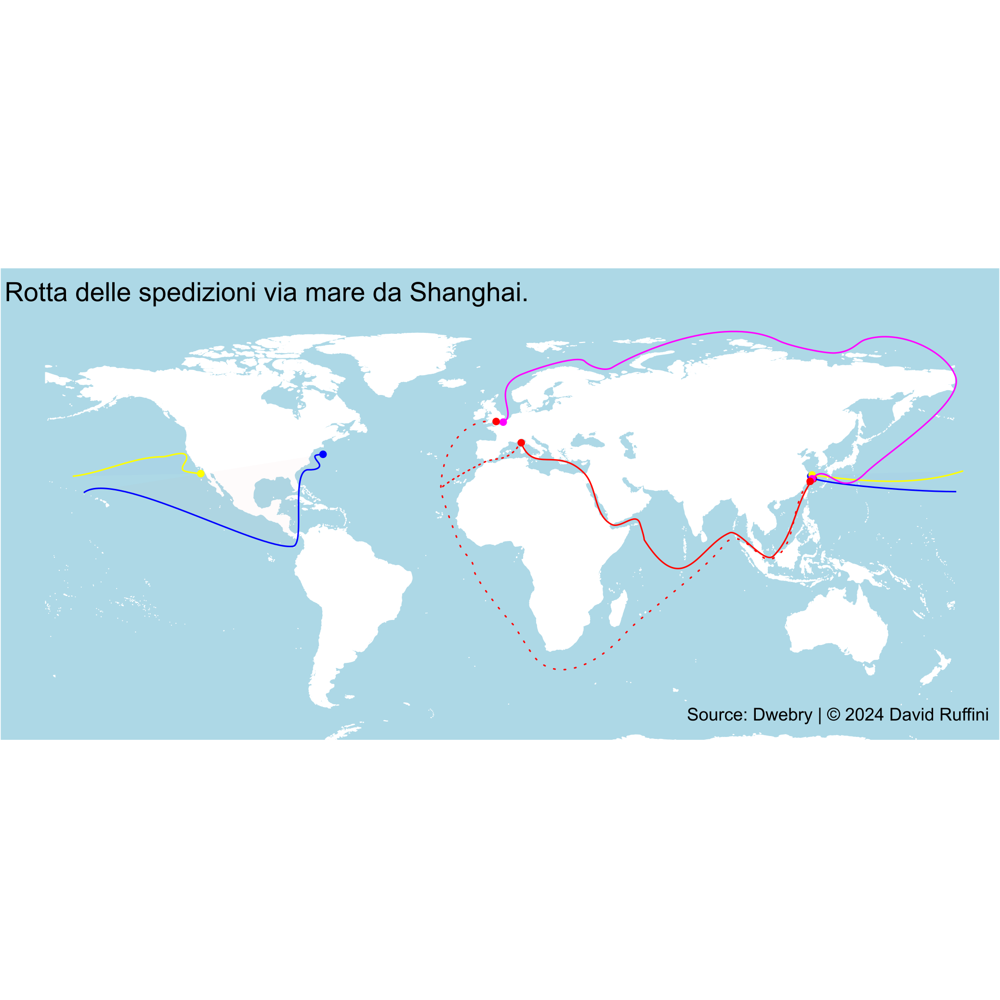

Negli ultimi mesi, gli attacchi da parte degli Houthi nel Mar Rosso hanno scosso il panorama delle rotte marittime internazionali, influenzando direttamente il commercio e i costi di trasporto, portando a un cambiamento significativo nelle rotte preferite, con conseguenze notevoli per i porti europei, tra cui quello di Genova
Il gruppo ribelle yemenita ha intensificato i suoi attacchi nel Mar Rosso, una delle rotte cruciali per il trasporto marittimo tra l'Asia e l'Europa, spingendo molte compagnie di navigazione a riconsiderare le rotte tradizionali e adottare alternative più sicure. Infatti l'aumento delle polizze assicurative per la rotta classica hanno spinto le compagnie a dirottare le proprie navi verso il Capo di Buona Speranza e poi su per lo stretto di Gibilterra o direttamente verso Rotterdam.

Le rotte da Shangai ai porti occidentali e in tratteggiata le due possibili nuove rotte.
Uno degli impatti diretti di questa transizione è il notevole aumento dei costi di trasporto, infatti la circumnavigazione dell'Africa richiede più tempo e aumenta i costi operativi per le compagnie di navigazione; aumento dei costi che viene inevitabilmente riversato sui consumatori finali, influenzando il prezzo finale dei prodotti importati.
I costi in dollari per ciascun container da 40 piedi da Shanghai ai porti occidentai.
Il 18 novembre 2023, il costo totale per Genova era di 1449 dollari; 2 mesi dopo questo è salito a 6282 dollari, più di quattro volte il valore originario.
Il peso di Genova sul totale dei costi dei container è notevolmente cresciuto nel periodo considerato: all'inizio rappresentava circa il 19% del totale, mentre il 18 gennaio 2024 la sua quota è salita al 30%. Allo stesso modo si nota che Rotterdam ha aumentato in maniera significativa la sua influenza sul totale dei costi, al contrario dei porti statunitensi che non sembrano aver subito un aumento sostanziale dei costi e, anzi, hanno diminuito il loro ruolo relativo nel determinare il totale delle transazioni relative alle spedizioni da Shanghai.
In generale, i container destinati a Genova e Rotterdam emergono come quelli più colpiti dagli aumenti percentuali dei costi di trasporto marittimo da Shanghai.
Incrementi percentuali dei costi.
L'aumento dei prezzi dal 18 novembre 2023 al 18 gennaio 2024 per i container destinati a Genova e a Rotterdam è, rispettivamente, di quasi il 350% e il 300%. I porti statunitensi hanno subito rincari decisamente più calmierati: quasi il 75% per Los Angeles e circa il 110% per New York.
Gli attacchi degli Houthi impattano principalmente i porti europei, i quali subiscono aumenti di prezzi notevolmente superiori ai colleghi statunitesi.
Ciao!
Mi chiamo David, sono uno studente di Statistica e in questo sito raccoglierò le mie analisi su argomenti che trovo di mio interesse.
I motivi principali che mi hanno spinto a pubblicare le mie ricerche sono il voler dare ordine a ciò che prima vagava solamente tra le cartelle del desktop e condividere con gli altri i risultati delle suddette indagini.
Se siete in disaccordo, riconoscete un mio errore o per qualsiasi altro motivo volete scrivermi, potete contattarmi nei canali che ho messo in fondo alla pagina.